The current Metro ticket machines in Lisbon are outdated, confusing, and inaccessible to the visually impaired. We designed and prototyped an interface that creates a better flow for everyone, from a local rushing to work to a blind tourist navigating the city for the first time.
Project presentation
Research

This is the current Metro ticket machine:

Through a series of 13 interviews, with locals and tourists, users reported feeling confused and insecure when using it.

Most frequent complaints were:
- User Interface felt outdated
- Icons and buttons were confusing
- Many users couldn’t find the Language selection

Notes from the conducted interviews
The worst:
As the machine is entirely based on touch inputs...
It was not adapted for the visual impaired. At all.
How to make an UI that’s easier to understand while accessible to all?
Design
easier to understand


accessible to all

Option 1: wheel controller as input

 Physical interface allows for blind and visually impaired people to have touch feedback
Physical interface allows for blind and visually impaired people to have touch feedback
 One button does it all: rotation navigates between the menu, pressing selects the current option
One button does it all: rotation navigates between the menu, pressing selects the current option


Option 2: ATM-like input method

Using physical buttons allows for blind people to sense each option and receive touch feedback
Touch sensitive buttons allow for hover state: when finger hovers through the option the machine reads it, pressing the button confirms it


User testing

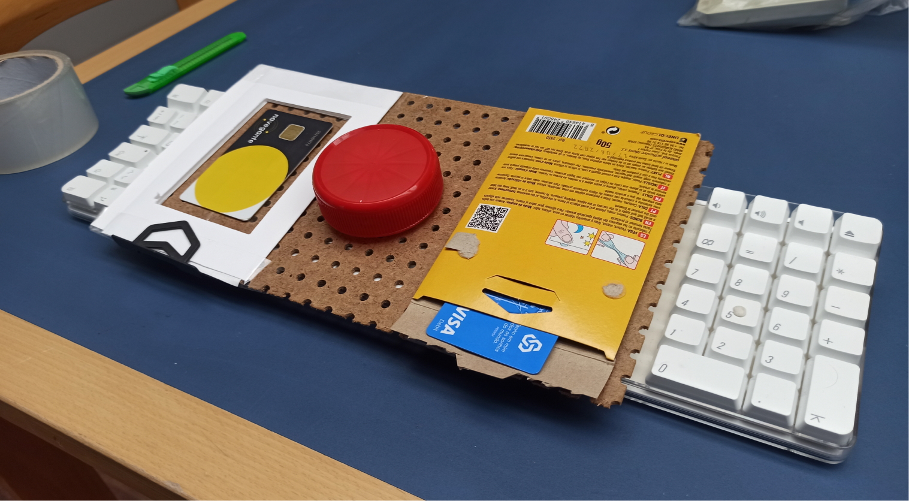
Physical prototype of Option 1, with a rotation button in the middle as the input method.
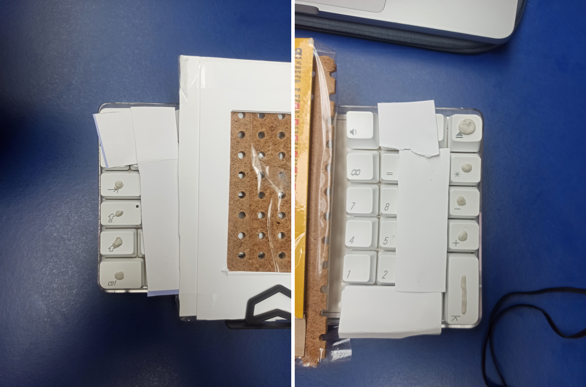
Option 2 prototype, where we covered the keyboard keys, leaving only 4 keys uncovered on each side. This gave the users the feeling of an ATM machine.
test protocol
"Easy" test
Buy a single trip
It’s always the first option, so the user only needs to press the button, not rotate it much
"Difficult" test
Reload card for the weekend
There are multiple possible outcomes. This forces the user to navigate and explore the interface to choose whichever ticket they think to be better
Option 1: wheel controller as input
2x easy tests
Goal: Understand the natural movements of the user, measure difficulty levels, observation of participants habits and tendencies, and gather feedback from the interaction.
3x difficult tests
Goal: Limit test the interface, find UI problems, have participants deep in the information hierarchy, and test the entire flow.
Iterations
Zapping was being chosen over the ”Daily Pass” options, which, for the tasks, would be a better choice.
A possible enhancement would be to move the Zapping position on the list, making it the last option. This would also make more sense, as Zapping is the only option where you add cash, not trips, to your card, so it could also be more natural for it to be in the end of the list, not mixed with the others.
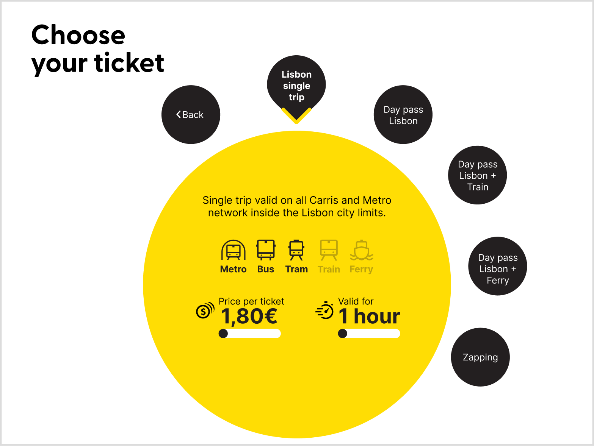
Zapping is now the last option in the ticket selection screen.
Option 2: ATM-like input method
5x difficult tests
Goal: Same objectives as for the Option 1.
Test results
SUS - System Usability Scale
Option 1: wheel controller as input
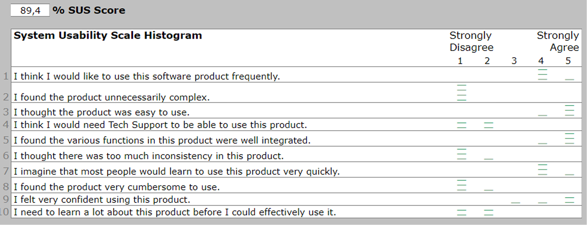
”Easy” tests results.
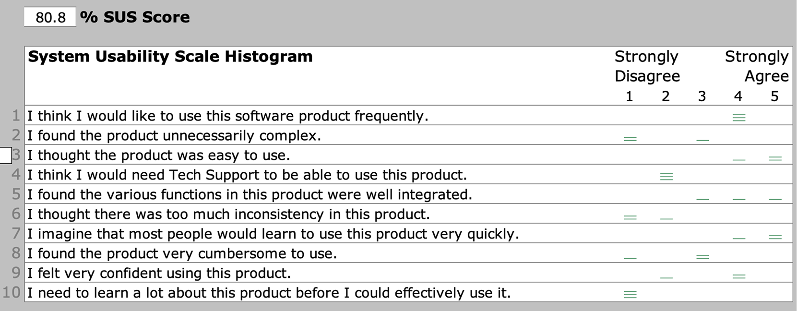
”Difficult” tests results.
Option 2: ATM-like input method
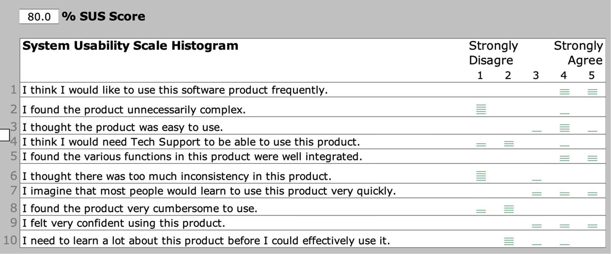
”Difficult” tests results.
SAM - Self-Assessment Manikin
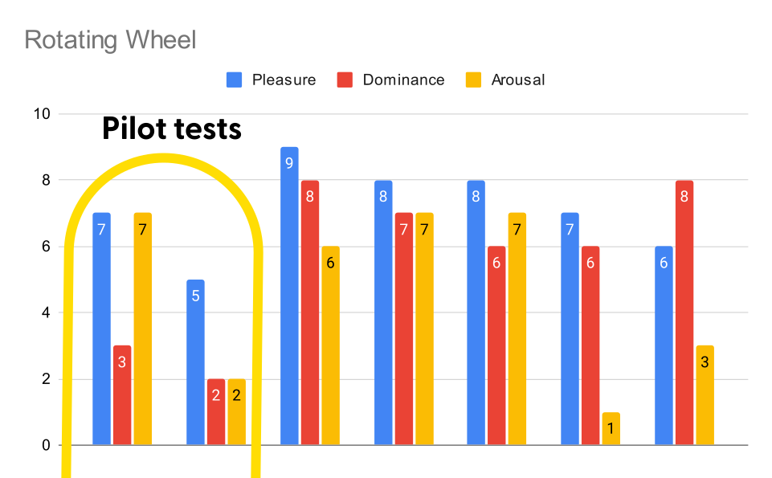
The results in the Option 1 tests show a clear enhancement after the pilot tests, probably indicating that our better explanation of the task also led to a higher level of understanding.
Removing the pilot tests, these are the result averages:
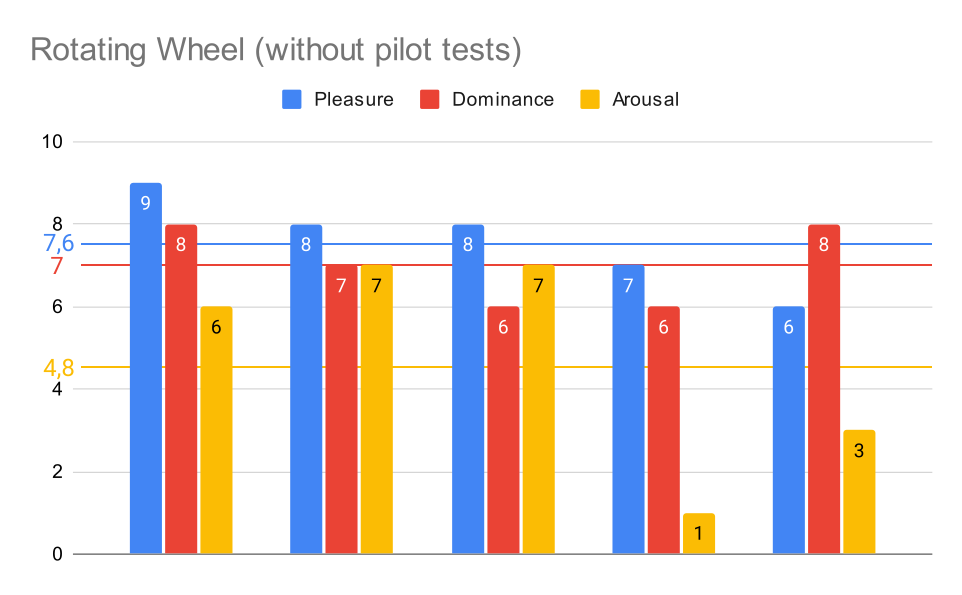
Option 1 SAM results.
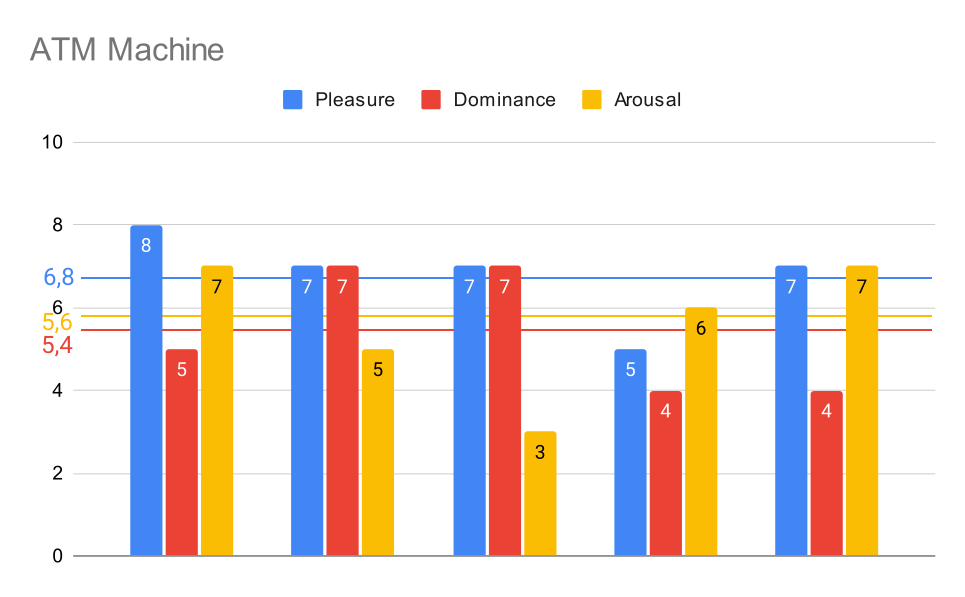
Option 2 SAM results.
The rotating wheel version of the machine had a better overall score for dominance and pleasure, probably due to users understanding how to interact with the interface more easily, with many saying it was very intuitive to understand the rotating scheme.
Meanwhile, the ATM version had a higher arousal, maybe due to participants having a harder time understanding how to interact with the interface, leading to a higher level of attention.
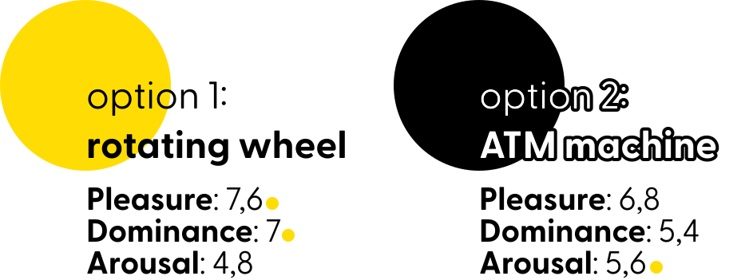
Conclusion
Option 1: wheel controller as input proved to be...
- easier to understand, as users didn’t need as much explanation before interacting with it
- more fun, as users reported higher pleasure and talked about feeling satisfied after using it
- less demanding, as the interaction happened naturally, leading to lower arousal rates
most importantly: even with their eyes covered, participants still easily used the machine, proving this can be a good solution for all users.
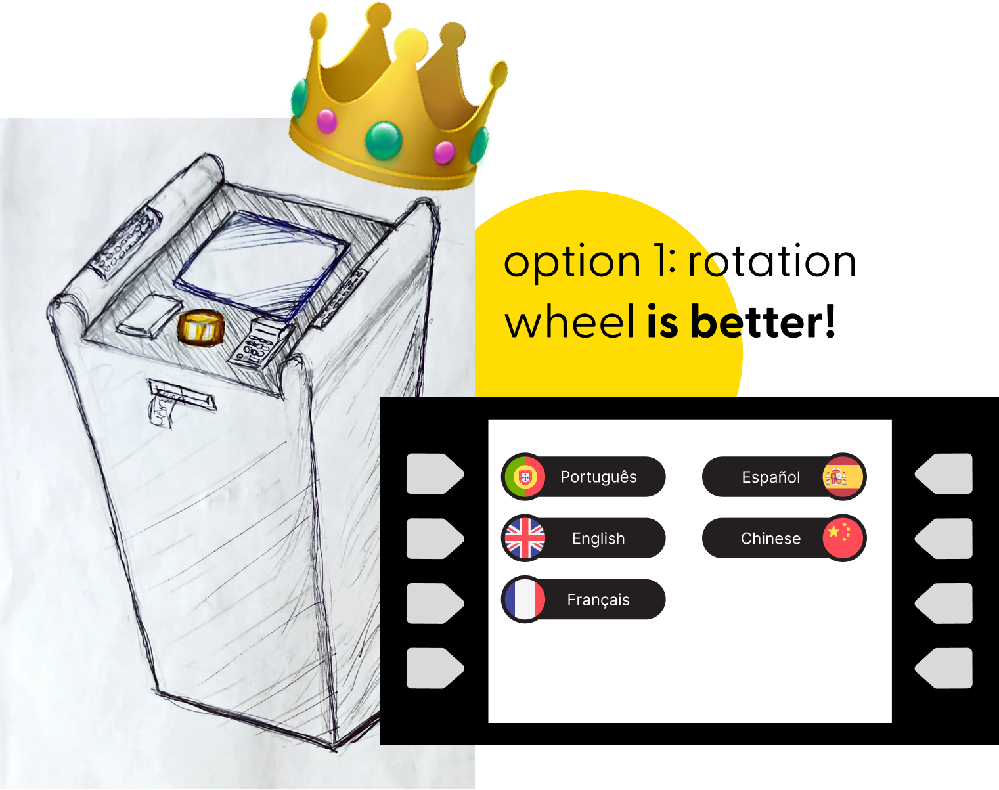
Credits
Designers: Alişan Ustun, Felipe Rabaça, Gustavo Albuquerque
My Roles: User Research, Interface Design, Usability Testing
Project type: Group Work
Duration: 4 months